Introduction
This article discusses four image effect algorithms that I explored as part of my co-op work term on IBM's Eclipse SWT team. Implementations of a simple emboss, blur, glow, and drop shadow are included along with ideas for future improvements. My primary focus has been on exploring basic algorithms for these effects.
Emboss Algorithm
The simplest graphical effect to explore is embossing, which gives images a molded or chiseled appearance [1]. The algorithm entails comparing the intensity of each pixel in an image to one or more of its neighbors. The red, green, and blue intensity components of a pixel are compared separately, and the largest difference found is used to determine the intensity of gray the resulting embossed pixel will display. An algorithm may compare each pixel with a neighbor to its left, right, top, bottom, or diagonal, or even a nearby pixel that is not adjacent at all.
Implementation
Testing revealed that choosing a comparison pixel that was not directly adjacent to the original pixel created the best embossed appearance. This implementation of emboss compares a pixel to its neighbor one row below and two columns to the left. Difficulties arise by following this approach because the first two columns and last row do not have comparison pixels. To solve the problem, these areas use a different comparison direction.
| 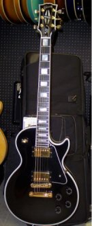 Original Image |
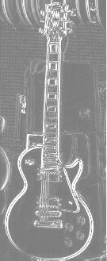 Emboss: Gray level 125 |
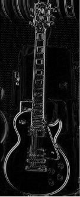 Emboss: Gray level 0 |
Future Improvements
In the future, the comparison direction and distance should be configurable to allow for a more customizable emboss. In addition, the embossed results should be more three-dimensional in appearance, as they are in graphics packages like GIMP.
Average Blur Algorithm
Several types of blur filters exist such as Gaussian blur, average blur, and motion blur. The average blur algorithm is explored here because of its fast run time and simple implementation. Similar to embossing, average blurring is an area filter —that is, a filtered pixel is based on both the original and its surrounding pixels [2]. Average blur is achieved by averaging a pixel's RGB intensities with the intensities of surrounding pixels within a certain square radius [2].
Implementation
Repeated calculations can be eliminated by performing the average blur in two separate stages: a horizontal blur and then a vertical blur [3]. SWT's direct palette API supports retrieving an entire row of pixel data at once, but not an entire column. As a result, the implementation simultaneously performs a vertical blur on all columns of a row rather than all rows of a column. This approach improves overall performance and space complexity by reducing the number of rows which must be cached during the vertical blurring stage.
Original Image |
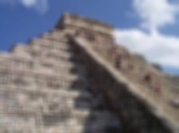 Blur: Radius 3 |
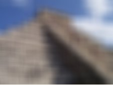 Blur: Radius 10 |
Future Improvements
Average blur can be improved, at the expense of performance, by considering a circular radius of neighboring pixels when blurring instead of a square radius. This alteration would help eliminate horizontal and vertical artifacts that can become apparent in blurred images, especially if they include borders [2]. Such a change introduces many new code complexities because the blur cannot be completed in one averaging pass per direction.
Glow Algorithm
In order to create a glowing visual effect in SWT, I created my own custom algorithm. Glow can be achieved by creating a solid border around an image, then using alpha blending to diffuse the border from opaque to transparent.
Implementation
My glow implementation is designed to create a glow around a rectangular image. First, a solid rectangular border is created around the image. The border's alpha values are set based on a linear function of distance from the internal rectangle's perimeter. In order to prevent the glow from becoming transparent too quickly, and to better highlight the image, I introduced a highlight radius which creates a more opaque border directly surrounding the image.
| 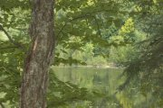 Original Image |
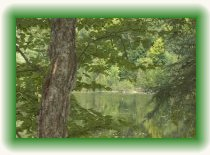 Glow: Radius 15 |
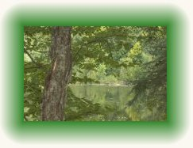 Glow: Radius 30 |
Future Improvements
My implementation of glow could be improved by supporting shapes other than rectangles.
Drop Shadow Algorithm
A drop shadow is simply a specialized glow. By altering the glow algorithm to only glow on two sides, and with slightly altered dimensions, a drop shadow effect can be achieved.
Implementation
| 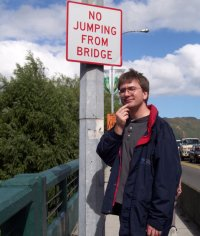 Original Image |
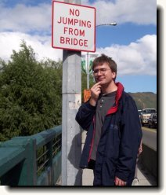 Drop Shadow: Radius 10 |
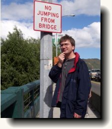 Drop Shadow: Radius 20 |
Future Improvements
Like the glow algorithm, drop shadow can be improved by supporting shapes other than rectangles. Once glow is altered to support shapes, an implementation for drop shadow should easily follow. In addition, the direction of the drop shadow should be configurable.
Summary
The implementations of these four algorithms can be built upon and eventually used to provide advanced graphical effects for SWT. They should allow for more customization and display seamlessly on or around any shape. In addition, the original transparency information of images should be considered when applying image effects.
Source Code and Effects Tool
Source code for each effect algorithm is included in the following package, along with source for a GUI test application.
| 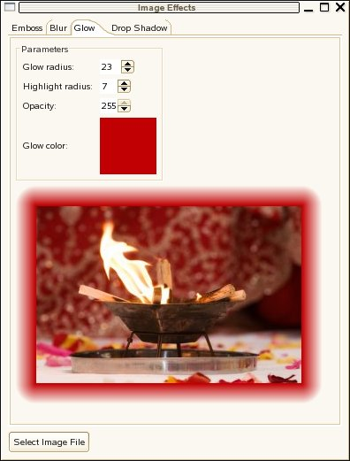 Image Effects GUI |
Acknowledgements
I would like to thank the entire SWT team for creating a fun, easygoing work environment, with special thanks to my mentor, Bogdan Gheorghe, for his ongoing support, encouragement, and patience. My success (and this article) would not be possible without his direction.
References
[1] Java Tech: Image Embossing: http://today.java.net/pub/a/today/2005/12/08/image-embossing.html [2] Filter: Blur: http://www.jasonwaltman.com/thesis/filter-blur.html [3] Blur: http://www.blackpawn.com/texts/blur/default.html